About Me
I'm passionate about machine learning and their applications, especially generative image/video models. I also like performance optimization, whether it be CPUs, GPUs, TPUs, or pretty much anything else.
My Projects
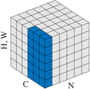
GPU-Optimized Group Normalization (code)
- Yielded up to 2x speedup over PyTorch’s group normalization implementation by rewriting CUDA kernels, tuning kernel configurations and memory access schemes, and profiling kernels using Nvidia Nsight Compute
- Sped up end-to-end CNN training by 35% and reduced memory usage by 30% by leveraging faster memory formats (NHWC) and fusing normalization with activation functions
- Open-sourced code as well as a document deriving the forward/backward pass
- Tools used: CUDA, C++, Nvidia Nsight Compute, PyTorch
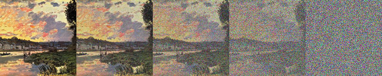
Generative Text-to-Image AI From Scratch (code, report)
- Reimplemented and trained a generative text-to-image denoising diffusion probabilistic model from scratch on an 800 GB subset of the laion2B-en image-caption dataset
- Increased model training efficiency as measured by hardware utilization on a Google TPU-v3-8 AI chip from 23.4% to 68.0% using PyTorch/XLA and Tensorboard
- Tracked model experiments, training progress, and wrote reports to document my work using Weights & Biases
- The diffusion model is a successor to another generative image model I've made from scratch (StyleGAN2-ADA)
- Tools Used: Python, PyTorch/XLA, Tensorboard, Weights & Biases
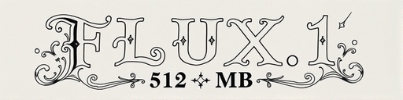
Large Model Inference on Consumer-Grade Hardware (video)
- Reduced memory usage of 12 billion parameter text-to-image model (FLUX.1) inference by 66x over naive methods using Huggingface Diffusers (from ~33 GB VRAM down to 512 MB to generate a 1024x1024 image)
- Halved memory usage and sped up inference by 40% over publicly available Diffusers codebase by patching source code to use low-precision CuBLAS matrix multiplication algorithms, operator fusion, and activation freeing
- Reduced inference time on NVIDIA Volta GPUs by 4.4x by merging a pull request into Huggingface Diffusers which fixed FLUX.1 numerical overflow with float16 inputs
- Eliminated any latency or memory consumption when quantizing models in Huggingface Quanto by fixing a bug regarding needless weight initialization in quantized modules (bug fix merged into main codebase)
- icon next to this project generated with FLUX.1[schnell]; prompt: ornate ink caligraphy spelling out "FLUX.1 512 MB"
- Tools used: Huggingface Diffusers, Nvidia Nsight Systems, PyTorch, Python
CoxLines: Rowing Data Collection + Analysis Tool
- Developed iOS app via Swift/XCode to collect GPS, accelerometer, gyroscope, and microphone data from a rowing shell
- Designed a GUI using PyQt, NumPy, and Pandas to visualize boat position, speed, and steering effectiveness, which is also synced with microphone recordings
- Collected 30+ hours of rowing data (and 300+ km of rowing/running data) using CoxLines and analyzed data using GUI and Matplotlib to identify areas of technical improvement within varsity boats
- Tools Used: NumPy, PyQt, Pandas, Matplotlib, Swift, XCode
 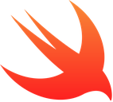
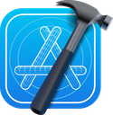
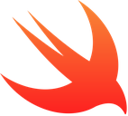
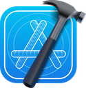

AI Image/Video Upscaling (model code, web app code)
- Tools Used: PyTorch, TensorFlow, Keras, Flask, HTML, CSS
- Implemented generative adversarial networks (SRGAN, ESRGAN, Real-ESRGAN, BasicVSR) for image and video upscaling using TensorFlow, Keras, and PyTorch from scratch
- Designed a web app via Flask, HTML, and CSS to upload and upscale images


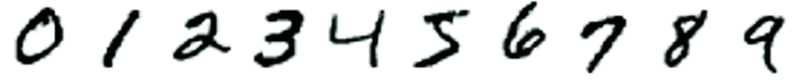
Deep Learning in C (code)
- Trained a neural network (an MLP to be specific) to recognize images from the MNIST numbers dataset entirely in C, covering file processing, forward passes, backpropagation, and model optimization
- Implemented a BLAS matrix multiplication algorithm reaching 80% performance of OpenBLAS (fastest open-source implementation)
- Tools Used: C

Neural Network Framework (code)
- Created a basic neural network framework which supports construction, inference, and training of MLPs and CNNs
- Layers: linear, 2D convolution (dense and depthwise), nearest-neighbor upsampling, max/average pooling, flatten, ReLU, leaky ReLU, sigmoid, softmax
- Losses: L2, cross-entropy
- Optimizers: SGD (with momentum), Adam
- Tools Used: NumPy, Python
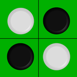
Othello Engine
- Designed a Python Othello engine using minimax, alpha-beta pruning, and evolutionary algorithms
- Boosted engine end-game performance by using linear regression of board state evaluations trained on 10,000+ Othello games of the engine playing against itself
- Play here: (my AI is 2023tnguyen; I did not make the website)
- Tools Used: Python
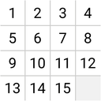
15-Puzzle Solver (code)
- Boosted 15-puzzle solving speed 9x over baseline using A* and additive pattern database (PDB) heuristics in Python (note: this project was an extension of a class assignment; the baseline was a canonical solution which also used A* with an improved Manhattan distance heuristic)
- Trained reinforcement learning neural network heuristic (DeepCubeA) using PyTorch for a 1.25-14x speedup over PDB solver
- Tools Used: Python, PyTorch
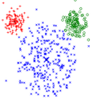
Image Compression via Clustering
- Tools Used: NumPy, Python
- Used K-Means clustering on image pixel values to determine the best colors to represent an image using NumPy
- Sped up Scikit-learn’s Gaussian mixture model implementation by 7x for the same task by modifying model update equations to avoid recomputation of repeated pixel values
- Tools Used: NumPy, Python
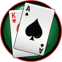
Blackjack AI
- Simulated 25M+ blackjack games with Python multiprocessing to generate win probabilities of blackjack states given player/dealer hands and deck card counts
- Used expectiminimax and the Kelly criterion to determine optimal blackjack and betting policy
- Outperforms basic betting strategies 54% of the time and yields an average return of 0.1% per round based on a simulation of 10M 5-game rounds with one deck
- Tools Used: Python
Random
- Hardware: Dell Inspiron 16 Plus 7620 (Intel-i7 12700H, Nvidia 3060 Max-Q, 32GB RAM)
- OS: Ubuntu 24.04
- Window Manager: i3
- Editor: Vim
- Other software I like: Gtimelog, Signal
- Hardest origami models I folded:
- US Flag (Robert J. Lang)
- Ancient Dragon (Kamiya Satoshi)
- Phoenix 3.5 (Kamiya Satoshi)
Email: tonanhhoaduc@gmail.com